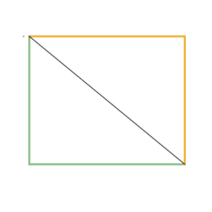

CSS三角形
参考：
https://www.jianshu.com/p/9a463d50e441
https://www.cnblogs.com/chengxs/p/11406278.html
一、三角形箭头
原理
将一个正方形以对角线(左上角、右下角画一条斜线)分成两个空心的三角形，利用这两个三角形进行旋转45度，即可得到向上、向右、向下、向左等多种三角形箭头。(如下图)
1、两根黄线组成的三角形，经过旋转负45度成为上三角形，旋转正45度成为右三角形
2、两根绿线组成的三角形，经过旋转负45度成为下三角形，旋转正45度成为左三角形

.arrow-up:after{
width: 6px;
height: 6px;
border-style: solid;
border-color: #666;
border-width: 1px 1px 0 0; /* 1px 表示上、右两条边, 0 表示下、左两条边 */
-webkit-transform: rotate(-45deg);
-moz-transform: rotate(-45deg);
-o-transform: rotate(-45deg);
transform: rotate(-45deg);
}
.arrow-right:after{
width: 6px;
height: 6px;
border-style: solid;
border-color: #666;
border-width: 1px 1px 0 0; /* 1px表示上、右两条边, 0 表示下、左两条边 */
-webkit-transform: rotate(45deg);
-moz-transform: rotate(45deg);
-o-transform: rotate(45deg);
transform: rotate(45deg);
}
.arrow-down:after{
width: 6px;
height: 6px;
border-style: solid;
border-color: #666;
border-width: 0 0 1px 1px; /* 0 表示上、右两条边, 1px 表示下、左两条边 */
-webkit-transform: rotate(-45deg);
-moz-transform: rotate(-45deg);
-o-transform: rotate(-45deg);
transform: rotate(-45deg);
}
.arrow-left:after{
width: 6px;
height: 6px;
border-style: solid;
border-color: #666;
border-width: 0 0 1px 1px; /* 0 表示上、右两条边, 1px 表示下、左两条边 */
-webkit-transform: rotate(45deg);
-moz-transform: rotate(45deg);
-o-transform: rotate(45deg);
transform: rotate(45deg);
}
二、实心三角形
我们平常使用border最普遍的情况——往往只给border一个较小的宽度（通常为1-2px）；然而这样的日常用法就会容易让大家对border的形成方式产生误解，即认为元素的border是由四个矩形边框拼接而成。（如下图）
.triangle__demo-border-tiny{
width: 80px;
height: 80px;
border-width: 1px;
border-style: solid;
border-color: orange;
}
然而事实并不是这样。实际上，元素的border是由三角形组合而成，为了说明这个问题，我们可以增大border的宽度，并为各border边设置不同的颜色。（如下图）
.triangle__demo-border-large{
width: 80px;
height: 80px;
border-width: 25px;
border-style: solid;
border-color: red blue yellow green;
}
既然如此，那么更进一步，把元素的内容尺寸设置为0会发生什么情况呢？我们将惊奇地发现，此时元素由上下左右4个三角形“拼接”而成！（如下图）
.triangle__demo-border-large{
width: 0;
height: 0;
border-width: 25px;
border-style: solid;
border-color: red blue yellow green;
}
那么，为了实现最终的效果，即保留最下方的三角形，还应该怎么做？很简单，我们只需要把其它border边的颜色设置为白色或透明色。(如下图)
.triangle__up{
width: 0;
height: 0;
border-width: 25px;
border-style: solid;
border-color: transparent transparent yellow transparent;
}
Duang~ 最终的简单三角形就绘制出来了。同理，如果想要得到其它边上的三角形，只需要将剩余的border边颜色设置为白色或透明色即可。
不过，被“隐藏”的上border仍然占据着空间，要想使得绘制出的三角形尺寸最小化，还需要将上border的宽度设置为0（其它情况同理）（如下图）
.triangle__up-final{
width: 0;
height: 0;
border-width: 0 40px 40px 40px;
border-style: solid;
border-color: transparent transparent yellow transparent;
}
CSS3实现圆角三角形
思路：父级给一个圆角，里面(after伪属性)用一个矩形并旋转一下，然后设置父级元素超出隐藏(overflow:hidden)
圆角三角形(右上角)
.triangle__radius-right{
position: relative;
width: 100px;
height: 100px;
line-height: 100px;
background-color: yellow;
border-radius: 12px;
color: #777;
text-align: center;
overflow: hidden;
}
.triangle__radius-right:after{
content: '';
display: inline-block;
position: absolute;
z-index: 1;
top: -6px;
right: -26px;
width: 80px;
height: 35px;
background-color: blue;
-webkit-transform: rotate(45deg);
-moz-transform: rotate(45deg);
-o-transform: rotate(45deg);
transform: rotate(45deg);
}